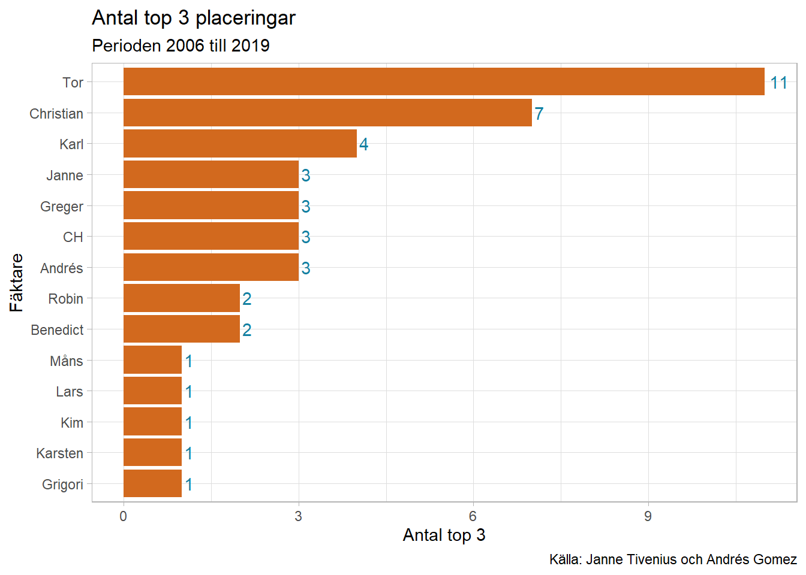
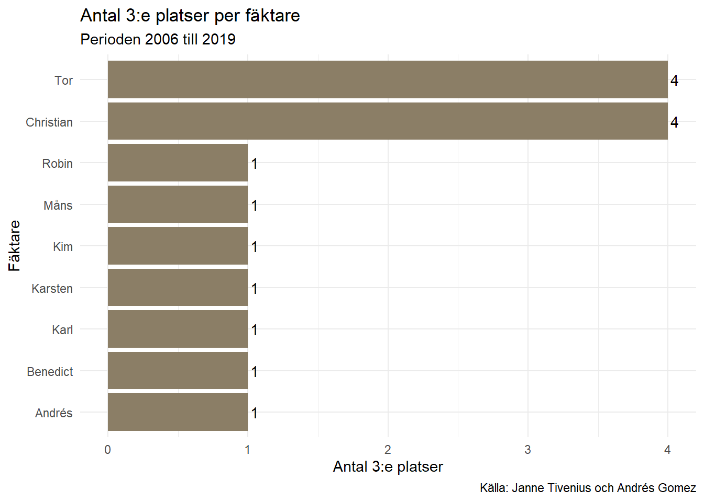
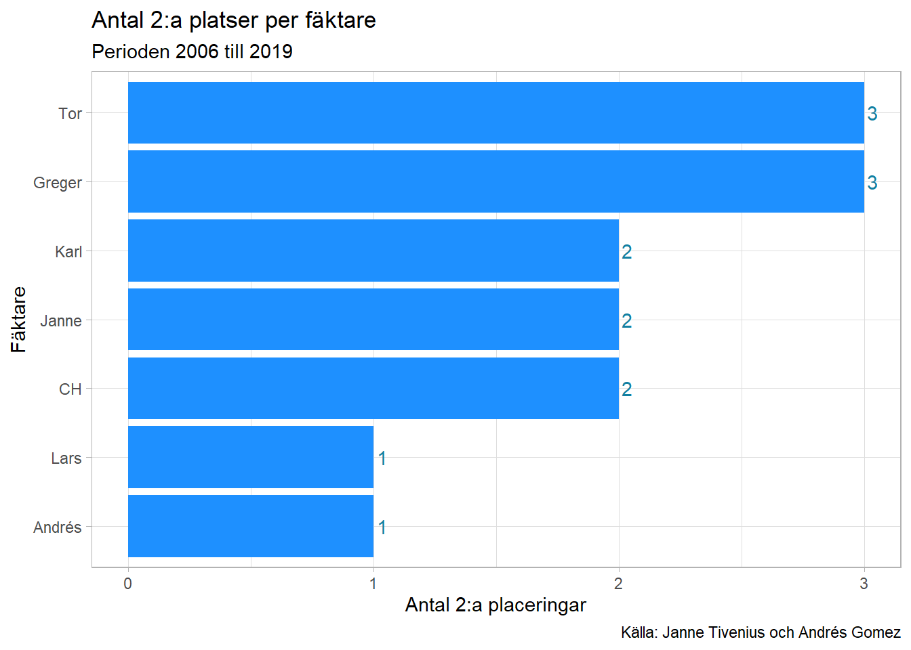
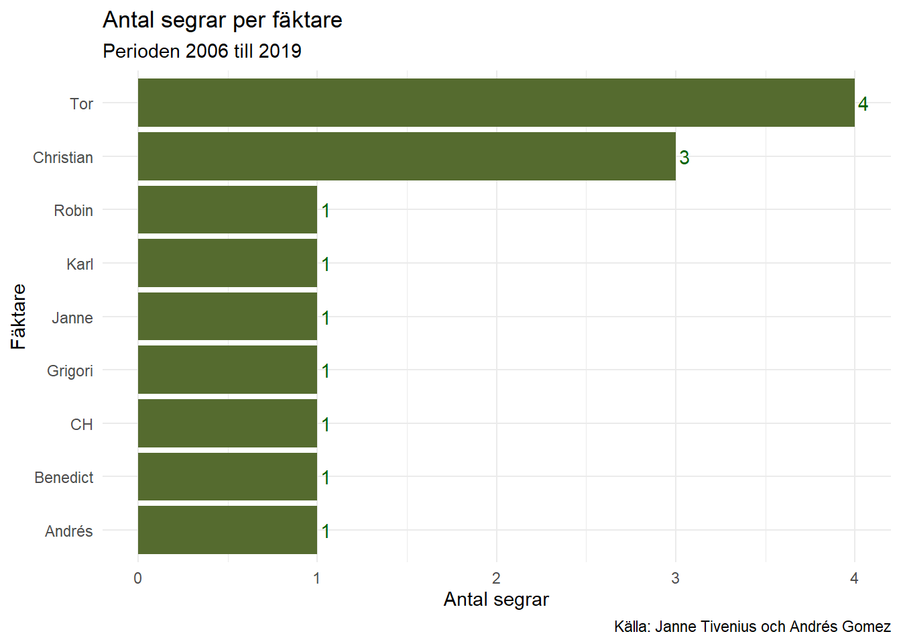

Som ni väl känner till har det länge funnits ett brett missnöje och en massiv kritik mot Vårcupens nuvarande tävlingsledning. Den främsta orsaken till detta är den undermåliga tillgången på historiskt datamaterial rörande tävlingen. Detta trots att den tidigare tävlingsledningen bestående av Janne Tivenius lämnade efter sig gediget datamaterial över tävlingsresultat för Vårcupen.
Tävlingsledningen har nu äntligen tagit denna kritik till sig och har tillsatt statistiks expertis för att återupprätta det lilla förtroende som förhoppningsvis fortfarande finns kvar. Resultaten av dessa ansträngningar kan ni nu ta del av.
Under de 14 år som Vårcupen har haft sin nuvarande skepnad har inte bara FFFs främsta fäktare lämnat avtryck i resultattabellen utan vi kan även konstatera att Djurgårdens Robin Kase har utmärkt sig. Men vi ska inte gå händelserna i förväg. Till att börja med ska vi presentera den fullständiga listan över medaljörer i Vårcupen.
Som ni ser kan ni själva ladda ned datamaterialet för att genomföra egna analyser eller göra kontroller av tävlingsledningens arbete.
Endast en lam tabell uppfyller ju inte det fullt befogade kravet på gedigen statistisk rapportering. Därför kör vi vidare med lite kompletterande analys.
Låt oss börja med att kolla in vilka fäktare som placerat sig på pallplatser under perioden.

För de av er som följt KM-statistiken kan det knappast komma som en överraskning att se Tors namn överst i den här tabellen. Med 11 pallplatser har han ett betryggande avstånd till nästa gigant i form av Christian Gustavsson som kan stoltsera med hela 7 stycken pallplatser. Bra jobbat Tor och Christian!
Bakom dessa kungligheter har vi en klunga fäktare med upprepade medaljplatser på sitt samvete. Bäst bland dessa är Kalle Harmenberg med 4 sådana. Intressant nog har en icke-FFF:are i form av Robin Kase tagit sig in på listan av återfallsmedaljörer. Bland de som tagit sig upp på pallen flera gånger förtjänar självfallet Benedict också ett hedersomnämnande.
Slutligen finns en grupp om 5 fäktare som en gång lyckats med prestationen att placera sig bland topp 3. Säkerligen kommer vi få se flertalet av dessa namn i framtida resultatrapporteringar.
Men hur fördelar sig dessa pallplatser mellan 1:a, 2:a och 3:e platser undrar ni säkert? Fortsätt då läsa för här kommer mer!
Att komma 3:a i Vårcupen är i sanning en enastående prestation! Vilka kan då dessa övermänniskor vara som lyckat med detta? Tack för att ni frågade! Här kommer svaret:

Oj, här var det jämt! Som ni kan se är det Christian och Tor som utmärker sig med hela 4 stycken 3:e placeringar var. De är faktiskt de enda fäktare som lyckats med bedriften att ta sig fram till 3:e platsen mer än en gång. Verkligen starkt!
Visst nämnde vi tidigare att icke-FFF:are har utmärkts sig i Vårcupen? Det kan ni tydligt se här, Robin Kase från Djurgården har skrivit in sig i historeiböckerna.
Dags att vänd blickarna till de finalisterna, de som nått nästan hela vägen till målet: silvermedaljörerna. Vilka som ingår i denna exklusiva skara framträder här.

Milda makter! Sju fäktare har nått nästan hela vägen och inte mindre än 5 av dessa har gjort detta flera gånger. Värt att notera att Greger matchar Tor i toppen på denna lista, båda med 3 segrar var.
Och slutligen, vilka har vunnit?

9 olika fäktare har nått så långt man kan nå (i alla fall i Vårcupssammanhang). Återigen ser vi Tor och Christian överst bland denna illustra skara! Båda dessa fäktare har dessutom vid upprepade tillfällen presterat bättre än alla andra. I Tors fall 4 gånger och i Christians 3 gånger. Hatten av till dessa välförtjänta mästare!
Vi har sett hur den yppersta eliten har presterat i Vårcupen, men hur ser detta förlopp ut över tiden? Vi vet ju att tävlingen har utspelats under en 14-årsperiod. Finns det något att notera när man tar tidshorisonten i betraktelse? Låt oss titta.
Vi börjar med att kolla på Tor segrar eftersom han är den som vunnit flest gånger.
| Tors segrar i Vårcupen | |||
|---|---|---|---|
| År | 1:a | 2:a | 3:a |
| 2006 | Tor Forsse | Andrés Gomez | Kim Mounen |
| 2009 | Tor Forsse | Greger Forslöw | Benedict Chambers |
| 2015 | Tor Forsse | Greger Forslöw | Christian Gustavsson |
| 2019 | Tor Forsse | CH Wendt | Karsten Kaping |
Intressant! Här kan vi konstatera att Tors segrar spänner över hela den tid som Vårcupen har existerat. Uppenbarligen har tidens tand inte påverkat Tors prestationer. Bra där!
Christian då? Låt oss titta närmare på hans segrar.
| Christians segrar i Vårcupen | |||
|---|---|---|---|
| År | 1:a | 2:a | 3:a |
| 2012 | Christian Gustavsson | Karl Harmenberg | Tor Forsse |
| 2014 | Christian Gustavsson | Karl Harmenberg | Robin Kase |
| 2016 | Christian Gustavsson | Lars Lindblad | Tor Forsse |
Christians dominansperiod började 2012 varefter han med ett års mellanrum erövrade segern ytterligare två gånger. Egendomligt att han inte vann även 2018? Vad kan ha skett där? Låt oss titta!
| Resultat de senaste 3 åren | |||
|---|---|---|---|
| År | 1:a | 2:a | 3:a |
| 2017 | Grigori Beskin | CH Wendt | Karl Harmenberg |
| 2018 | CH Wendt | Tor Forsse | Andrés Gomez |
| 2019 | Tor Forsse | CH Wendt | Karsten Kaping |
Aha! Där har vi förklaringen till att Christian inte vann 2018 – CH kliver in på scenen! Det här kräver dock lite närmare förklaring.
CH är på inga vis ny i klubbens historia. I flera decennier har han figurerat i händelsernas centrum. Vem har väl glömt segern i skol-SM i början av 80-talet? Den gången i florett. Och vi var många som grät glädjetårar när CH äntligen fick dra på sig den svenska landslagsoverallen (som han lånat av Joar) och framgångsrikt representerade vår stolta nation i veteranlandslaget. Att göra en komplett anal över CHs många bedrifter får dock anstå till en framtida krönika. Vi måste trots allt nämna att flera “förståsigpåare” hävdar att CH aldrig tidigare varit bättre än han varit under de senaste åren. Den här analysen ger anhängare av denna teori ett otvetydigt stöd. Alla CHs 3 pallplatser har kommit till stånd under den senaste 3-årsperioden! Dessutom har han under denna period aldrig varit sämre än 2:a.
Vad har då framtiden i sitt sköte? Svaret på denna fråga kan ni själva påverka genom fortsätta strida för att skiva in er i listan över tävlingens många hjältar!